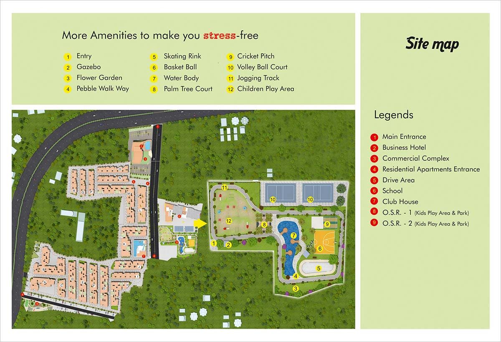

Buy Premium 2 BHK, 3 BHK Flats near Tambaram
Buying an apartment in one of the renowned areas of Chennai is the best option for future appraisal. In this, Tambaram is one of the locality in Chennai. It is one of the most important suburb to witness both residential and commercial infrastructure developments for the past two decades. With these tremendous real estate developments, independent homes and flats near Tambaram had become a demand nowadays. Besides, there is an overflowing level of individuals from other states to Chennai in search of job and business. This also made an entryway for the growth of real estate industry and socioeconomic levels in the city.
As a developing suburb, many real estate developers have launched their project that contains, independent homes, 1 bhk flats and 2 bhk flats near Tambaram. On the other hand, there is also a massive residential development on the fringes of the town. In addition, there is a scarcity of land in the urban areas of Chennai, so opting for a fresh and developing suburb such as Tambaram has become a preferable choice and a good investment as well among home buyers. Moreover, the prime localities adjacent to Tambaram such as the, Perungalathur, Chrompet, Pallavaram and Sanatorium have truly blossomed in terms of residential developments. Owing to this reason, buying a 2 bhk or 3 bhk flats near Tambaram have become a countless demand by people.
Additionally, the social infrastructures around the suburb is a great contribution to the rapid development. The NH45 is located amidst the area that connects Chennai to all major South Indian cities. Thus, mode of transportation is an added advantage in Tambaram such as bus, train, two or four wheelers. Thus, with these entire advantageous factors Tambaram suburbs is a real estate hotspot to offer a significant advantage in the upcoming years for both home buyers and property investors.